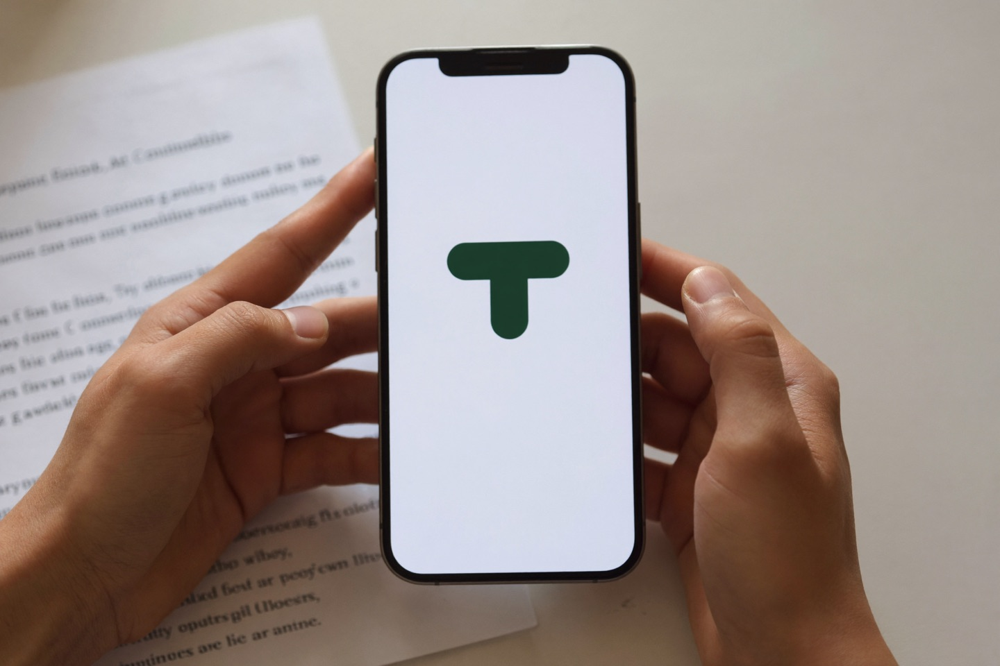
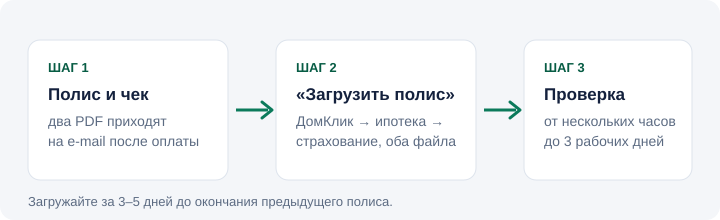

Как загрузить страховку в ДомКлик по ипотеке Сбербанка
Четыре шага, два файла, до трёх рабочих дней на проверку. Работает для полиса любой аккредитованной страховой — не только СберСтрахования.
Коротко. Чтобы загрузить страховку по ипотеке в ДомКлик, нужны два файла — PDF полиса и кассовый чек об оплате, которые страховая присылает на e-mail после онлайн-оформления. В личном кабинете ДомКлик откройте карточку ипотеки, раздел про страхование, и прикрепите оба файла через «Загрузить полис». Проверка занимает от нескольких часов до трёх рабочих дней, поэтому загружайте полис за 3–5 дней до окончания предыдущего. Подходит полис любой аккредитованной Сбербанком компании; чаще всего отказывают из-за трёх причин — страховая не в списке, страховая сумма меньше остатка долга или в полисе не указан банк как выгодоприобретатель.

Что понадобится
- Полис в PDF — приходит на e-mail сразу после онлайн-оплаты.
- Кассовый чек об оплате — отдельным PDF или в том же письме.
- Доступ в ДомКлик — сайт или приложение, тот же логин, что для ипотеки.
Пошагово

Откройте ипотеку
В ДомКлике — карточка вашей ипотеки, раздел про страхование (в приложении и на сайте он называется по-разному, ищите «Страховка» или «Страхование»).
«Загрузить полис»
Прикрепите PDF полиса и чек. Если просят — укажите страховую компанию и номер полиса.
Дождитесь проверки
От нескольких часов до 3 рабочих дней. Статус — в том же разделе; при отказе там же будет причина.
Загружайте заранее. Полис должен начать действовать не позже, чем закончится предыдущий, а проверка идёт до трёх рабочих дней. Считайте и оплачивайте за 1–2 недели до годовщины договора.
Почему полис могут не принять
| Причина | Как исправить |
|---|---|
| Страховая не в списке аккредитованных Сбербанком | Проверьте список; при покупке через партнёрский калькулятор показываются только аккредитованные. |
| Страховая сумма меньше остатка долга | Остаток берите из ДомКлика на дату продления; попросите страховую переоформить полис на правильную сумму. |
| В полисе не указан банк как выгодоприобретатель | При оформлении выбирайте «Сбербанк» в поле банка — тогда условие выполняется автоматически. |
| Нет чека или загружен только один файл | Загрузите полис и чек отдельно; чек — из письма от страховой. |
| Пропущена дата начала действия | Дата начала нового полиса должна быть не позже даты окончания старого. |
Продлеваете — сначала сравните цену
Продление — это новый договор, и его можно оформить в любой аккредитованной компании. Для одного и того же заёмщика цены различаются до 2,5 раза, а остаток долга за год уменьшился — полис должен стоить дешевле, чем в прошлом году.
Сравнить цены 14 страховых для моей ипотеки →РекламаРасчёт и оформление — в окне партнёра Пампаду (ООО «Страховые Партнеры») на странице калькулятора. Цена та же, что напрямую в страховой; полис принимает Сбербанк, загружается в ДомКлик.
Вопросы
Куда в ДомКлике загружать страховку?
Ваша ипотека → раздел «Страхование» → «Загрузить полис». В приложении — карточка кредита, пункт «Страховка». Нужны PDF полиса и чек.
Примет ли Сбербанк полис не от СберСтрахования?
Да, если компания в списке аккредитованных. Загружается так же, отдельного согласования не требуется.
Сколько проверяют?
От нескольких часов до трёх рабочих дней. Загружайте за 3–5 дней до окончания предыдущего полиса.
Что делать, если не приняли?
Проверьте аккредитацию страховой, страховую сумму (не меньше остатка) и выгодоприобретателя (Сбербанк). Исправьте у страховой и загрузите заново.